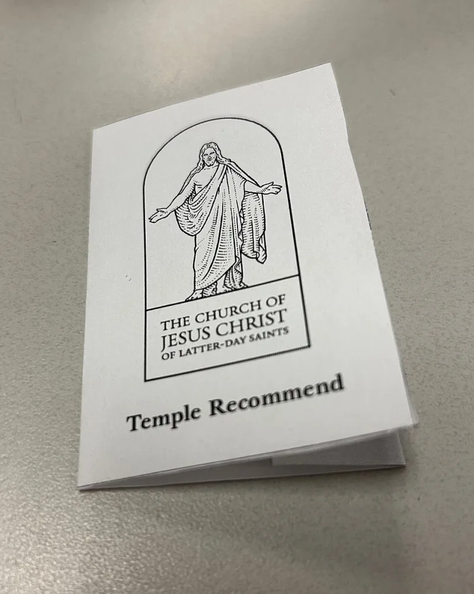

Coffee can keep a member out of the temple
ContestedLDS scholars have a real answer here. Say so before your friend does.
What it is
D&C 89, given in 1833. It counsels against wine, strong drink, tobacco and "hot drinks" — later defined as coffee and tea.
Its own second verse says it is sent "not by commandment or constraint."
What it became
Under Heber J. Grant, keeping it became a fixed requirement for a temple recommend, formalised by about 1921.
So a cup of coffee can now keep a member out of the temple, and out of a child's wedding.
Their answer, at full strength
That it is a health code and a covenant standard, not a purity law — the body as a temple, as in 1 Corinthians 6:19-20. A church may raise a standard over time without contradicting itself.
How strong is this argument?
Arguable both ways. The real question is not coffee.
It is what happens when advice given expressly not as a commandment becomes a test of worthiness. That is close to what Jesus rebuked in Mark 7.
What to say
"D&C 89:2 says it isn't a commandment. When did that change, and who changed it?"


How they answer this — at its strongest
It is a health code and a covenant standard, and any church may set one.
The strongest form of their position is this. The Word of Wisdom is not a purity law. It does not claim that certain substances defile the soul. It is a revealed health code and a covenant standard, resting on the body as a temple of God at 1 Corinthians 6:19-20.
Any covenant community may set such a standard as a condition of its own ordinances. The Bible has precedents. The Nazirite vow. Daniel's abstention. The Rechabites. All are commended.
The shift from counsel to commandment is explained as prophets applying it over time, by common consent, 'adapted to the capacity of the weak' at D&C 89:3. That is the same living authority they believe governed food rules in both Testaments.
The verdict
Arguable both ways. The real question is advice that turns into a test of worthiness.
The history is not disputed, and church sources concede it. It was given 'not by commandment', and it later hardened into a gate for the temple, fixed under Heber J. Grant by 1921.
Whether that clashes with Scripture is argued. The health-code framing is coherent.
But Colossians 2:20-23 and 1 Timothy 4:3 take aim at exactly this: making abstinence rules a measure of standing. And here a rule about drink is tied to the ordinances held to be required for exaltation.
Sources
- Church History Topics — Word of Wisdom (D&C 89)
- FAIR — Word of Wisdom: History and implementation
- MRM — The Word of Wisdom: Food Restrictions & False Prophets
- Doctrine and Covenants 89, primary text